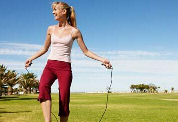

跳绳标准测量方法
2016/02/02
测量帮助

跳绳，是一人或众人在一根环摆的绳中做各种跳跃动作的运动游戏。这种游戏唐朝称“透索”，宋称“跳索”，明称“跳百索”、“跳白索”、“跳马索”，清称“绳飞”，清末以后称作“跳绳”。作为一种古老的汉族民俗娱乐活动，南宋以来，每逢佳节都跳绳，家家户户都要比赛。
1、用前脚掌起跳和落地，切记不可用全脚或脚跟落地，以免脑部受到震动，当跃起在空中时，不要过度弯曲身体，而成为自然弯曲的姿势。跳时，呼吸要自然有节奏。
2、两手分别握住绳两端的把手，通常情况下以一脚踩住绳子中间，两臂屈肘将小臂抬平，绳子被拉直即为适合的长度。
3、向前摇时，大臂靠近身体两侧，肘稍外展，上臂近似水平，用手腕发力，使两手在体侧做画圆动作。
4、要循序渐进的练习，跳绳的速度和时间长度应根据个人情况来定。一开始每次运动时间5-10分钟即可，然后逐渐延长时间。
5、跳绳的时间，一般不受任何限制，但要避免引起身体不适，饭前和饭后半小时内不要跳绳。并且跳绳前不可大量饮水。